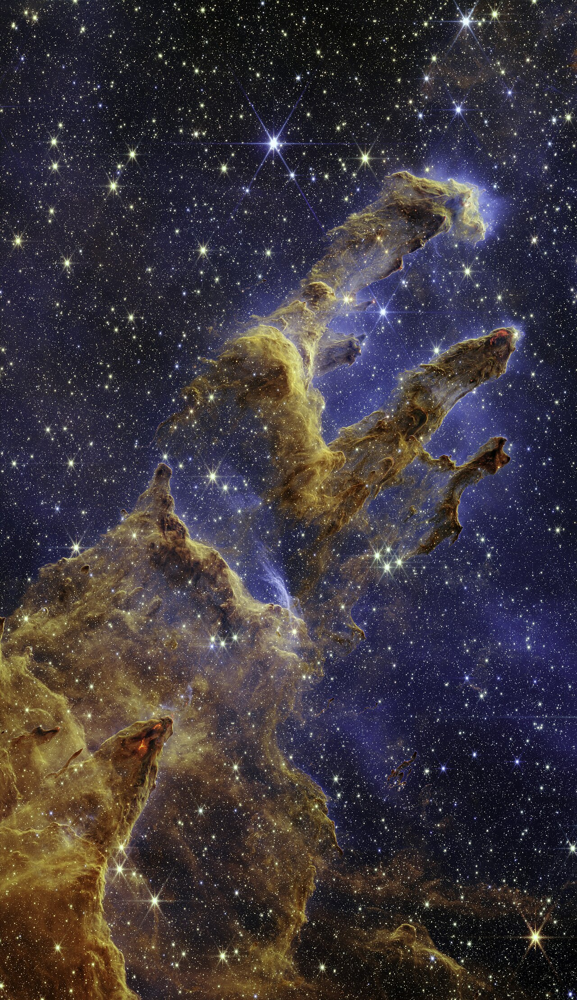
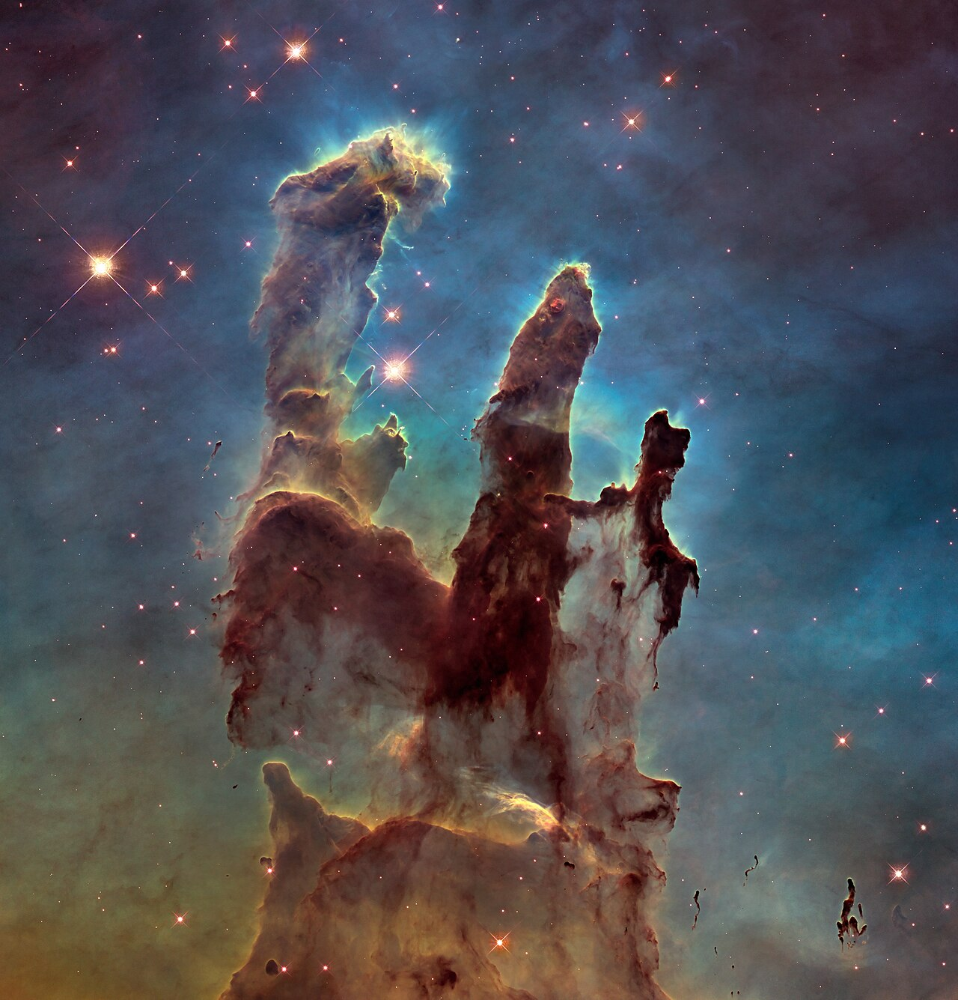
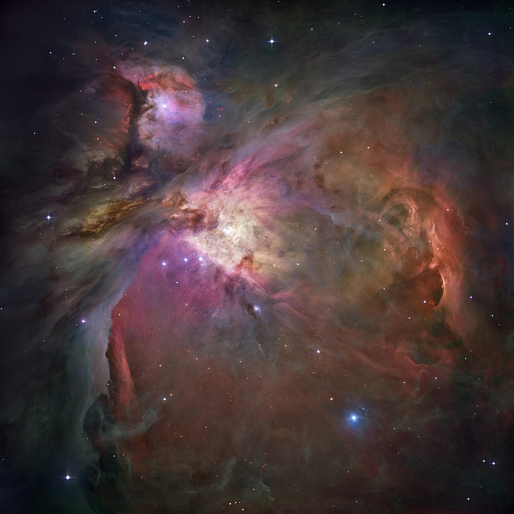
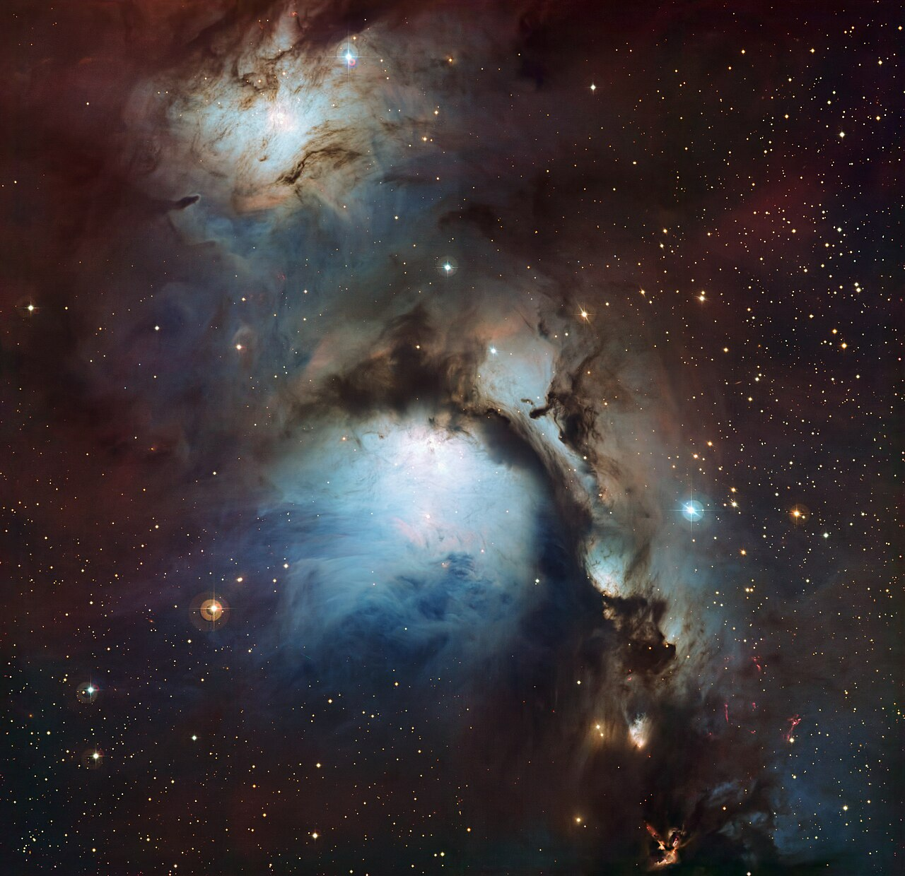
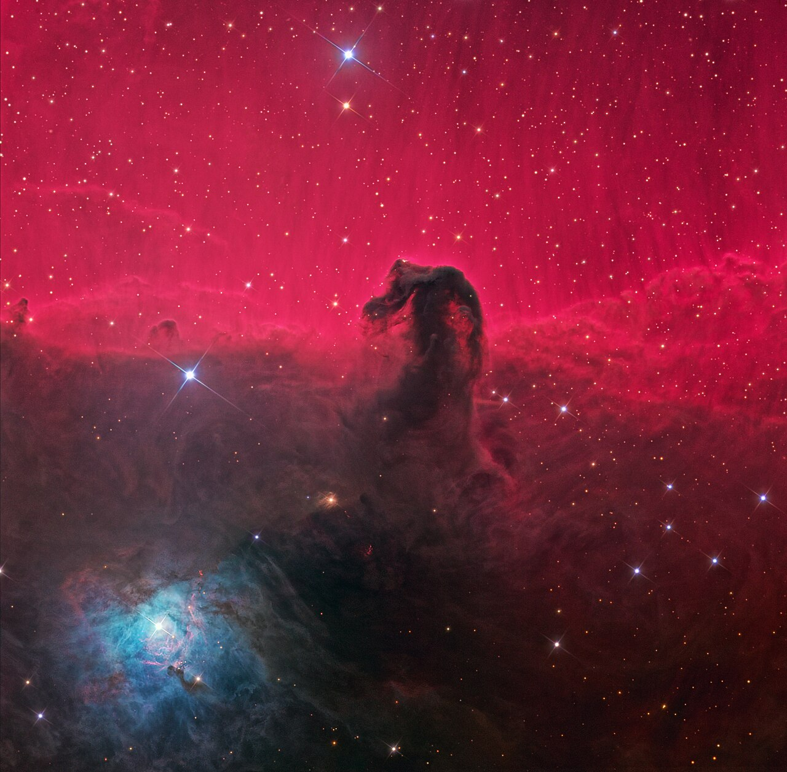
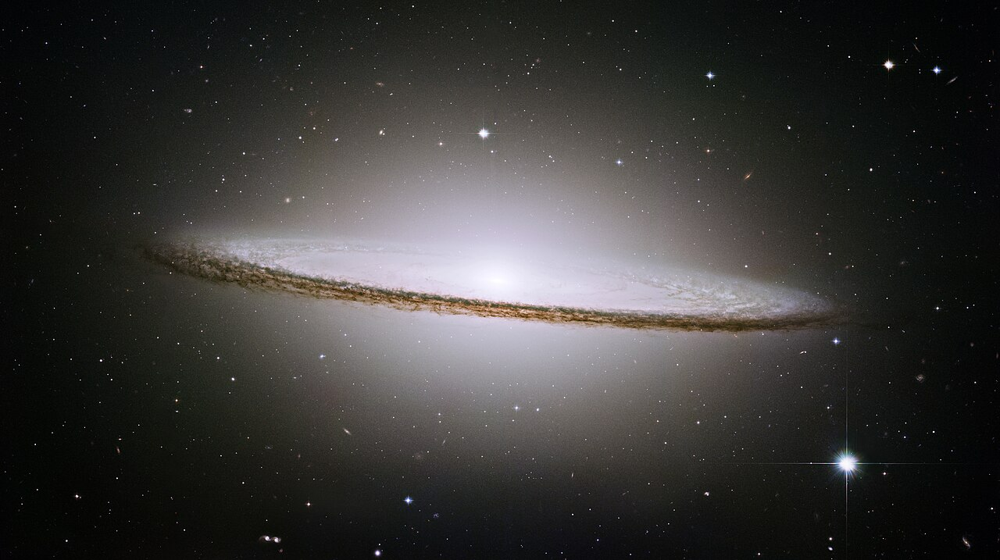

동기 유발
창조의 기둥 속에는 무엇이 숨어 있을까?
교과서 p. 90학습 목표
- 성간 물질의 종류와 각각을 관측하는 방법을 설명할 수 있다.
- 성간 소광 자료를 통해 성간 티끌의 존재를 확인하고, 성간 티끌의 특징을 설명할 수 있다.


가운데 막대를 좌우로 끌어 비교해 보자. 독수리 성운(M16)의 '창조의 기둥' · NASA, ESA, CSA, STScI, Hubble Heritage Team
같은 곳을 찍었는데, 가시광선에서 검은 기둥이었던 곳이 적외선에서는 투명해지고 그 안에 별들이 보인다.
기둥은 무엇으로 되어 있고, 왜 파장에 따라 다르게 보일까?
기둥은 무엇으로 되어 있고, 왜 파장에 따라 다르게 보일까?
비교 슬라이더로 '가시광선은 막히고 적외선은 통과한다'를 먼저 느끼게 한 뒤, 개념 2(성간 소광은 짧은 파장일수록 크다)로 설명합니다. 운영안 3차시(성간 기체·성운 1 / 성간 티끌·소광·적색화 1 / 데이터 탐구 1).
핵심 개념 1
성간 기체와 성운
교과서 p. 90 ~ 91(1) 성간 기체의 세 가지 모습
- 성간 물질: 별과 별 사이 공간의 기체와 티끌. 질량의 약 99%가 기체(대부분 수소·헬륨), 약 1%가 티끌이다. 평균 밀도는 1 cm³에 원자 1개 정도로 매우 희박하다.
| 상태 | 온도 | 어디에? | 관측 방법 |
|---|---|---|---|
| H Ⅱ 영역 (이온화 수소) | 약 10 000 K | O·B형 별 주변 | 가시광선 Hα(656.3 nm) 붉은 방출선 |
| H Ⅰ 영역 (중성 수소 원자) | 약 100 K | 은하 원반 전체 | 전파 21 cm 수소선 |
| 분자운 (수소 분자 H₂) | 약 10 ~ 30 K | 밀도 높은 구름, 별 탄생 장소 | CO 분자의 전파·적외선 |
(2) 성운의 종류
- 방출(발광) 성운: 뜨거운 별의 자외선이 수소를 이온화하고, 전자와 다시 결합할 때 빛을 낸다. 주로 붉은색(Hα). 예: 오리온 대성운
- 반사 성운: 스스로 빛을 내지 않고 가까운 별빛을 티끌이 산란. 파란빛이 잘 산란되어 푸른색. 예: M78, 플레이아데스 주변
- 암흑 성운: 밀도 높은 티끌이 뒤쪽 별빛을 가려 검게 보인다. 예: 말머리 성운, 바너드 68

NASA, ESA, M. Robberto

ESO/Igor Chekalin, CC BY 4.0

Ken Crawford, CC BY-SA 3.0
시뮬레이션 1성운 만들기: 별의 온도와 위치에 따라
왼쪽: 위에서 본 배치(관측자는 아래). 오른쪽: 관측자가 망원경으로 본 모습. 별이 2만 K 이상이면 자외선이 수소를 이온화할 수 있다.
핵심 개념 2
성간 티끌 · 소광과 적색화
교과서 p. 91 ~ 92(1) 성간 티끌
- 크기 약 0.1 μm 안팎의 규산염·탄소(흑연) 알갱이, 표면에 얼음이 덮이기도 한다. 질량은 성간 물질의 1%뿐이지만 빛에 큰 영향을 준다.
- 별빛을 흡수해 데워지고(수십 K), 적외선을 낸다. 티끌 표면은 수소 분자 등이 만들어지는 '화학 공장'이기도 하다.
- 은하수 가운데의 검은 띠, 옆에서 본 나선 은하의 티끌 띠(솜브레로 은하)가 성간 티끌의 증거이다.

NASA/ESA and The Hubble Heritage Team
(2) 성간 소광과 성간 적색화
- 성간 소광: 티끌이 별빛을 흡수·산란해 별이 실제보다 어둡게 보이는 현상. 겉보기 등급이 커지므로, 보정하지 않으면 거리를 실제보다 멀게 계산한다.
- 소광은 파장이 짧을수록 크다. 그래서 적외선·전파는 티끌을 잘 통과한다(창조의 기둥!).
- 성간 적색화: 파란빛이 더 많이 줄어 별이 실제보다 붉게 보이는 현상 → 색지수가 커진다. 색 초과 E(B−V)로 소광량을 추정한다.
m − M = 5 log r − 5 + AV E(B−V) = (B−V)관측 − (B−V)고유 AV ≈ 3.1 E(B−V)
시뮬레이션 2티끌 구름을 지나는 별빛의 스펙트럼
회색 선: 티끌이 없을 때 스펙트럼, 색 선: 티끌을 지난 뒤. 가운데 원은 별이 보이는 색이다. B(440 nm)와 V(550 nm) 위치에서 얼마나 줄었는지 비교하자.
데이터 탐구
배경 별 수백 개로 암흑 성운의 '소광 지도' 그리기
탐구 개요
천문학자들은 암흑 성운 바너드 68 뒤쪽 별 수천 개의 색을 측정해, 별빛이 얼마나 붉어졌는지로 구름의 티끌 분포 지도를 만들었다. 같은 방법을 모의 관측 자료(배경 별 700개)로 따라 해 보자. 별 하나하나가 '구름을 찌르는 탐침'이 된다.
가시광선 사진 보기V 필터 관측에서 구름 쪽에 별이 거의 없다. 정말 별이 없는 것일까?
색 초과 계산각 별의 분광형으로 고유 색지수를 알고 있다. E(B−V) = 관측 색 − 고유 색, AV = 3.1 E(B−V)로 별마다 소광량을 구한다.
지도 만들기흩어진 별의 AV 값을 격자에 평균해 소광 지도(히트맵)를 그린다. 격자 크기를 바꾸면 무엇이 달라지는가?
적외선으로 확인근적외선 K 밴드로 바꾸면 구름 뒤 별이 나타난다. 소광 지도와 비교한다.
데이터 랩모의 암흑 성운 관측
시야 약 8′ × 8′. 배경 별은 모두 구름(약 125 pc)보다 훨씬 멀리 있다. V 필터는 22등급, K 필터는 19등급까지 검출된다고 가정했다. 소광 지도에서 회색 칸은 검출된 별이 없어 값을 구할 수 없는 곳이다.
분석 질문
1. V 필터 사진에서 구름 가운데에 별이 없는 까닭은? 근적외선 사진과 비교해 설명해 보자.
구름 중심의 소광이 AV ≈ 20등급 이상이어서 배경 별이 V 검출 한계(22등급)보다 어두워졌기 때문이다. K 밴드 소광은 V의 약 1/9(AK ≈ 0.11 AV)이어서 2등급 남짓만 어두워지므로 구름 뒤 별들이 보인다. 별이 없는 것이 아니라 '가려진' 것이다.
2. 소광 지도에서 구름의 모양과 중심의 AV는? 격자 크기는 어떻게 고르는 것이 좋을까?
구름은 거의 둥글고 중심으로 갈수록 소광이 급격히 커진다(가장자리 1 ~ 2등급 → 중심부 10등급 이상). 격자가 너무 크면 중심의 높은 값이 평균되어 흐려지고, 너무 작으면 칸마다 별이 1 ~ 2개뿐이라 값이 들쭉날쭉하고 빈칸이 많아진다. 칸마다 별이 몇 개 이상 들어가는 범위에서 가장 작은 격자가 적당하다.
3. 구름 중심 가까이 있는 별(AV = 8)을 소광 보정 없이 거리를 계산하면 실제 거리의 몇 배로 계산될까?
5 log(r잘못/r실제) = 8 → r잘못/r실제 = 101.6 ≈ 40배. 성간 소광을 무시하면 거리를 엄청나게 과대평가한다(허셜·캅테인·섀플리의 오류).
형성 평가
개념 확인 문제
그림·자료 출처
사진: NASA, ESA, CSA, STScI, ESO 및 Wikimedia Commons 이용자 사진. 소광 지도 탐구는 Alves, Lada & Lada(2001) 바너드 68 연구 방법을 본뜬 교육용 모의 자료입니다. 시뮬레이션은 직접 만들었습니다.